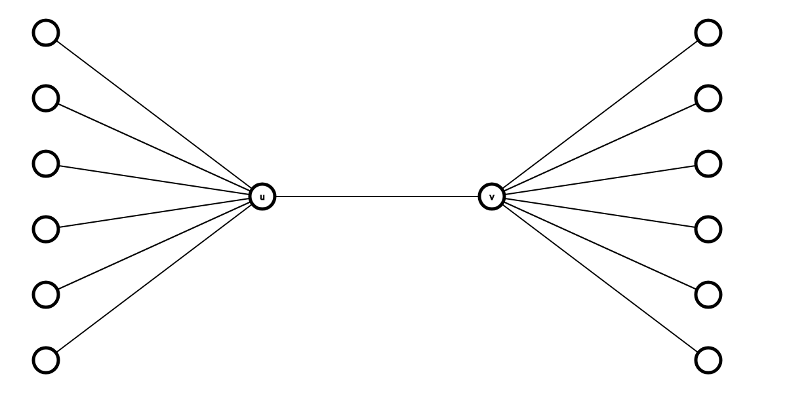

给定一棵 $n$ 个点的无根树，定义一个点的 $2-$邻域为与它距离不超过 $2$ 的点的集合 (包括自身)。
现在给定所有点的 $2-$邻域的列表 (可能被打乱)，请还原出这棵树。如果由多解，任意一组解均可。
第一行包含一个正整数 $n$ ($2 \leq n \leq 1000$)，表示树的大小。
接下来 $n$ 行，每行的第一个整数 $k$ 表示某个点的 $2-$邻域的大小 $\left| N_2 \left( i \right) \right|$，接下来的 $k$ 个整数描述那个点的 $2-$邻域 (即给出集合 $N_2 \left( i \right)$ 的各个元素)。
数据保证存在满足条件的树。
输出 $n - 1$ 行，每行两个整数，依次描述树上的 $n - 1$ 条边。
考虑两个点 $u, v$，如果它们的 $2-$邻域的交集为 $2$，设 $N_2 \left( u \right) \cap N_2 \left( v \right) = \left\{ s, t \right\}$，则一定有 $\operatorname{dist} \left( u, v \right) = 3$，且 $s, t$ 是 $u$ 到 $v$ 简单路径上中间的两个点，从而 $s, t$ 之间由连边。
进一步分析可知，对于树上的一条边 $\left( u, v \right)$，如果 $u$ 和 $v$ 都不是叶节点，则这条边一定会被刚才的过程所连上。
因此我们现在只剩下叶节点还未和其余点连边了。
考虑一个叶节点 $l$，设 $N \left( l \right) = \left\{ t \right\}$，并假设 $g \in N_2 \left( l \right)$。若 $g = l$，则由定义易知 $N_2 \left( g \right) = N_2 \left( l \right) = \left\{ t \right\} \cup N \left( t \right)$，若 $g \neq l$，则 $\left\{ t \right\} \cup N \left( t \right) \subseteq N_2 \left( g \right)$。
这说明，$\left\{ t \right\} \cup N \left( t \right)$ 是所有 $N_2 \left( g \right)$ 的交 (或者说大小最小的一个)，即 $$ \bigcap_{g \in N_2 \left( l \right)} N_2 \left( g \right) = N_2 \left( l \right) = \left\{ t \right\} \cup N \left( t \right) \tag 1 \label 1 $$
因此，我们枚举 $N_2 \left( l \right)$ 中的每个点 $g$，并求出所有这样的 $N_2 \left( g \right)$ 的交。
(ps: 虽然我们不知道 $N_2 \left( l \right)$，但是求 $N_2 \left( g \right)$ 的交还是可以做到的。首先，由 $2-$邻域的定义，可知 $g \in N_2 \left( l \right) \Leftrightarrow \operatorname{dist} \left( g, l \right) \leq 2 \Leftrightarrow l \in N_2 \left( g \right)$，于是 $\eqref 1$ 是 $\Leftrightarrow$ $$ \bigcap_{l \in N_2 \left( g \right)} N_2 \left( g \right) = \left\{ t \right\} \cup N \left( t \right) \tag 2 \label 2 $$ 而这只需要枚举所有包含 $l$ 的 $2-$邻域，求交即可)
记子树 $T'$ 为 $T$ 中所有非叶节点构成的树 (它的结构是已知的)。
求得 $N_2 \left( l \right)$ 后，由于有可能存在其它的 $g \neq l$，使得 $N_2 \left( g \right) = N_2 \left( l \right) = \left\{ t \right\} \cup N \left( t \right)$ (比如，$t$ 还有其它相邻的叶节点)，因此不能通过下标查找。
不过，集合 $N_2 \left( l \right) = \left\{ t \right\} \cup N \left( t \right)$，与 $T'$ 的交，应该等于 $T'$ 中 $t$ 的邻域 —— $N_{T'} \left( t \right)$ 和自身的并。
而当 $\left| T' \right| \geq 3$ 时，$T'$ 中每个点的邻域与自身的并是两两不同的。因此，通过这个特征，我们就可以在 $T'$ 中找到我们所要的 $t$ 点。
因此，在这种情况下，对于每个叶子，都可以找到对应的 $T'$ 中的点与之相连，从而问题得到解决。
于是，现在只剩下 $\left| T' \right| \leq 2$ 的情形了。
$\left| T' \right| = 1$。此时原树的直径为 $2$，从而它必须是星图 $S_{n-1}$。
不难发现，对于星图，每个点的 $2-$邻域均为原树中所有的点，即 $V \left( T \right)$。
因此随便输出一张星图就可以了。
$\left| T' \right| = 2$。此时原树的直径为 $3$，树一定形如下图所示：
此时，除了中间的两个点 $u, v$ 的 $2-$邻域为全集 $V \left( T \right)$，其它点的 $2-$邻域分为两类：位于左边 ($L$) 的点的 $2-$邻域均为 $L \cup \left\{ u, v \right\}$，位于右边 ($R$) 的点的 $2-$邻域均为 $R \cup \left\{ u, v \right\}$。
注意到在上面的分析中，$u, v$ 是对称的，也就是说，将 $u$ 和 $v$ 交换位置，所得的新树还是满足条件的。
因此在找到这对 $u, v$ 以后，任取一个 $2-$邻域不为全集 $V \left( T \right)$ 的集合，将其去掉 $u, v$ 后即得集合 $L$，补集 $V \left( T \right) \setminus \left( L \cup \left\{ u, v \right\} \right)$ 即为 $R$。
综上，整个问题获得解决，时间复杂度为 $O \left( n^3 \right)$，可以通过 std::bitset 优化来做到 $O \left( \dfrac {n^3} \omega \right)$。
#include <bits/stdc++.h>
const int N = 1054;
typedef std::bitset <N> bitset;
int n;
bitset leaf, G[N], B[N];
int main() {
int i, j, k, u, v, L; bitset r, best;
scanf("%d", &n);
for (i = 0; i < n; ++i)
for (scanf("%d", &k); k; --k) scanf("%d", &j), B[i].set(j);
for (i = 1; i <= n; ++i) G[i].set(i), leaf.set(i);
for (i = 0; i < n; ++i)
for (j = i + 1; j < n; ++j)
if ((r = B[i] & B[j]).count() == 2) {
u = r._Find_first(), v = r._Find_next(u);
if (!G[u].test(v))
G[u].set(v), G[v].set(u), leaf.reset(u), leaf.reset(v);
}
L = leaf.count();
if (L == n) {for (i = 2; i <= n; ++i) printf("1 %d\n", i); return 0;}
if (L == n - 2) {
for (i = 0; i < n && B[i].count() == n; ++i); r = B[i];
for (i = leaf._Find_first(); i != N; i = leaf._Find_next(i))
j = r.test(i) ? u : v, G[i].set(j), G[j].set(i);
} else
for (i = leaf._Find_first(); i != N; i = leaf._Find_next(i)) {
for (k = INT_MAX, j = 0; j < n; ++j)
if (B[j].test(i))
if (r = B[j] & ~leaf, (v = r.count()) < k)
best = r, k = v;
for (j = best._Find_first(); j != N; j = best._Find_next(j))
if ((G[j] & ~leaf) == best) {G[i].set(j), G[j].set(i); break;}
}
for (i = 1; i <= n; ++i)
for (j = G[i]._Find_next(i); j != N; j = G[i]._Find_next(j))
printf("%d %d\n", i, j);
return 0;
}
坑1：在 std::bitset 中，善用 _Find_first 和 _Find_next 可以用来减小常数，避免退化。
坑2：不要忘记对 $\left| T' \right| = 2$ 进行判断，此时我们需要找一个叶节点的 $2-$邻域来进行判定。找这个邻域不能通过枚举叶节点 (因为你不知道它们的对应关系)，可以从前往后枚举集合，直到找到一个大小不为 $n$ 的集合。